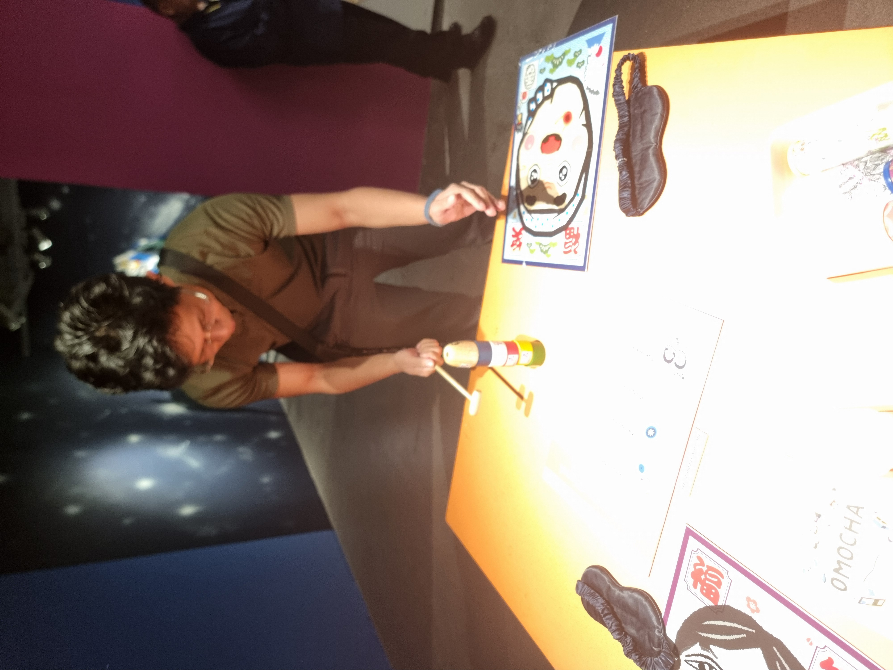
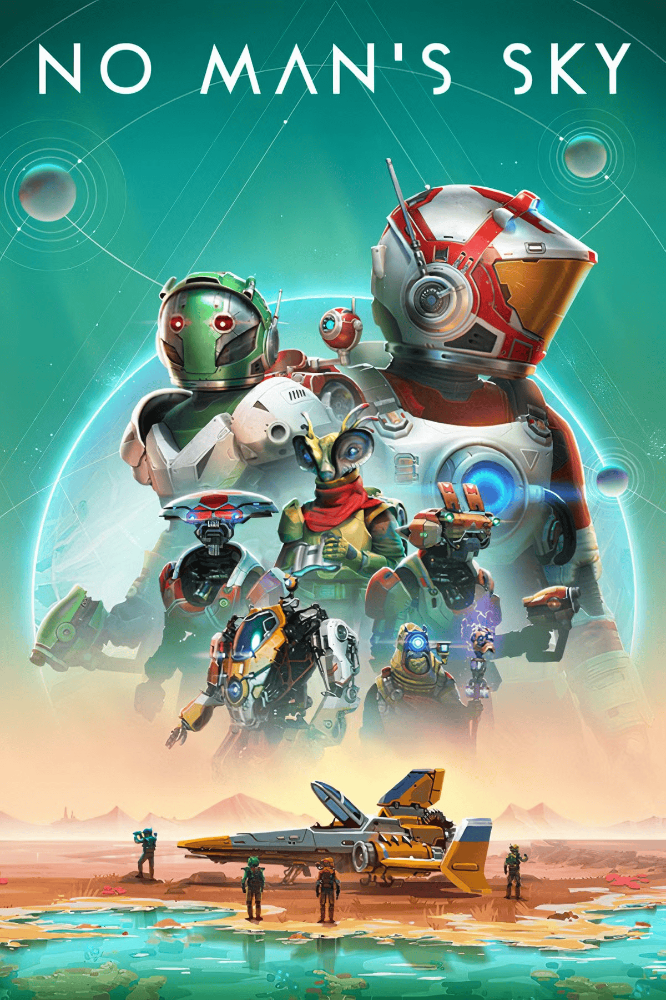
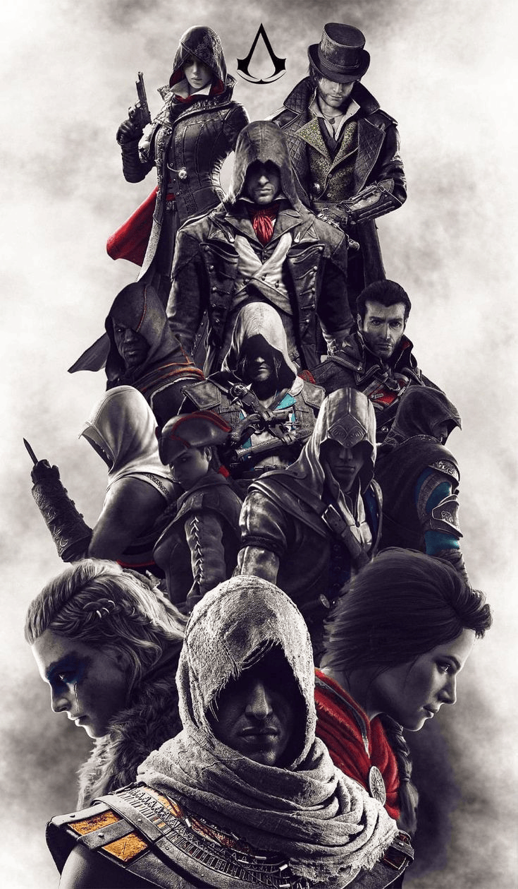
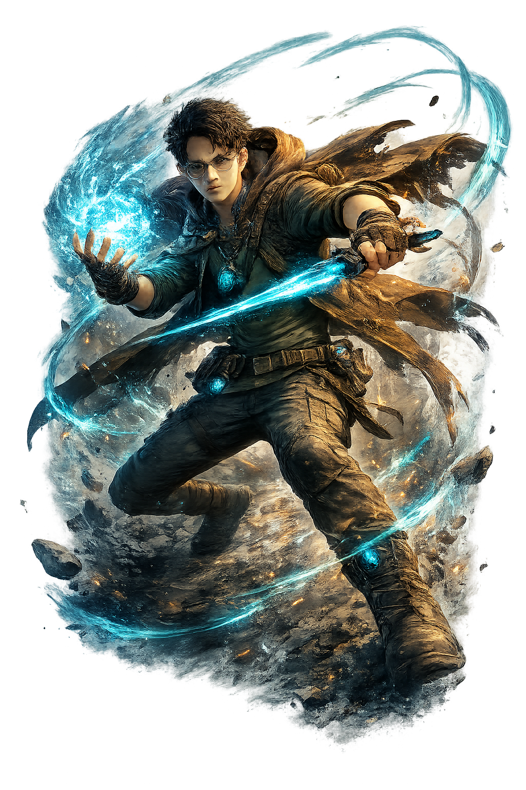
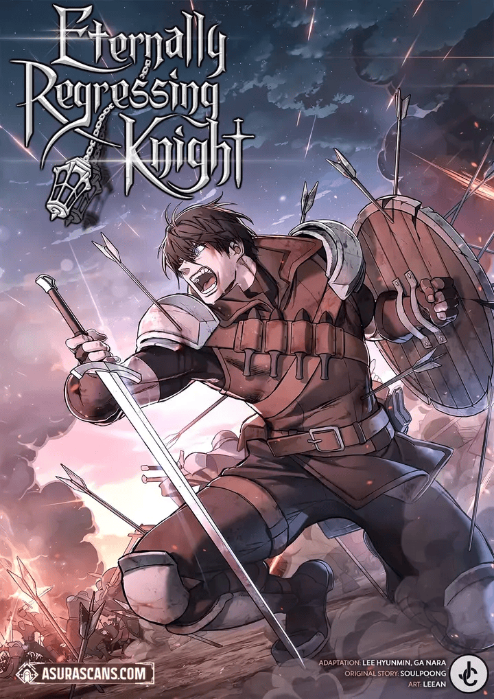
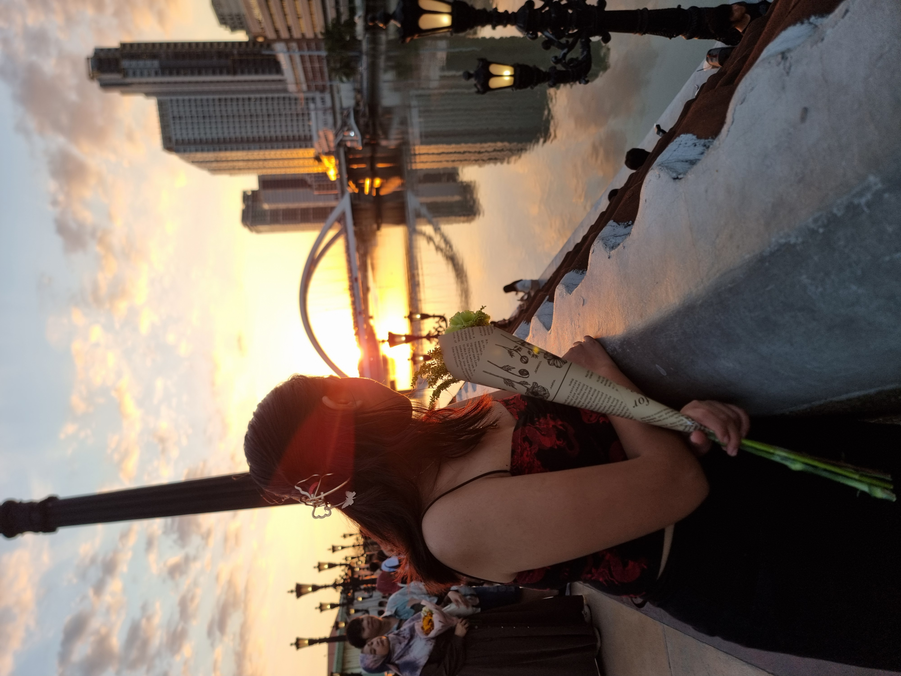

Civilizations & Institutions
How societies construct governance, trade routes, administrative records, and lasting institutions to manage scale, handle resource constraints, and preserve continuity across generations.
IDENTITY
Work is one part of identity, not the frame that holds everything else.
Full-stack development, software architecture, and system reliability.
Running, swimming, movement, calisthenics, and physical challenge.
Spontaneous trips, street food, unplanned walks, and local discovery.
Civilizations, infrastructure evolution, historiography, and systems.
Personal software experiments, side tools, containers, and testing boundaries.
Strategy, RPGs, simulation mechanics, and worldbuilding systems.
Focus soundscapes, ambient, post-rock, electronic, and daily rotation.
Manga, Manhwa, Manhua, Manfra, Anime, Isekai, Murim, and Regression stories.
Street scenes, architectural geometry, landscape light, and candid moments.
Technical references, engineering history, philosophy, manga, and research.
Full-stack development with a focus on system organization, application structure, and operational clarity.
Most of my professional work is in full-stack development, but I tend to think beyond the page or feature itself-how the application is structured, how data moves, how it is deployed, how failures are observed, and how future changes will affect the system.
CAREER DIRECTION
Long term, I am growing toward Full-Stack Systems Architecture: staying hands-on with application development while becoming better at connecting software structure, infrastructure, reliability, data, and technical decisions.
Fitness is less about one sport and more about staying physically capable and giving myself something measurable to work against.
"Consistency over intensity-progress is built in the daily reps when no one is watching."
HEALTH & LONGEVITY
Maintaining baseline physical energy, cardiovascular resilience, and mobility for life and work.
ROUTINE & DISCIPLINE
Consistent weekly habits-early morning pavement miles, pool laps, trail hikes, and structured calisthenics.
PERSONAL CHALLENGE
Setting objective metrics and pushing endurance boundaries without competing against others.
SELF-COMPETITION
Measuring personal progress against past benchmarks to build mental resilience.
I like travel most when it feels exploratory rather than scheduled around landmarks-trying food, walking somewhere unfamiliar, finding places unexpectedly, and doing activities that make a trip feel distinct from everyday life.



Trying regional dishes, street food markets, and spontaneous small places recommended by locals rather than tourist guides.
Walking through neighborhoods off the main itinerary to observe daily life, architectural details, and quiet side streets.
Seeking outdoor trails, coastal walks, and natural environments that offer open horizon and physical contrast to indoor coding.
I'm interested in how ideas, technologies, systems, and civilizations evolve-and in the records, decisions, infrastructure, and competing interpretations they leave behind.
How societies construct governance, trade routes, administrative records, and lasting institutions to manage scale, handle resource constraints, and preserve continuity across generations.
The evolution of physical and technical networks-aqueducts, maritime shipping, railways, telegraphs, and early computing hardware-and how real constraints shaped trade-offs.
How historical records are preserved, how different parties interpret the same historical event, and the crucial distinction between primary evidence and later secondary narratives.
Human behavior under real constraints, moral frameworks, decision-making under uncertainty, and evaluating technical or societal choices by their long-term consequences.
Outside formal employment, I often learn technology by building something small enough to break, rebuild, compare, or deliberately stress.
QUESTION / HYPOTHESIS
What happens during multi-container orchestration, local network isolation, and automated database seed routines?
TEST ENVIRONMENT
Configured custom Docker Compose stack with isolated bridge networks, healthchecks, and migration containers.
LEARNED / OUTCOME
Container networking overhead is negligible compared to the reproducible configuration and isolation benefits.
QUESTION / HYPOTHESIS
How do modular service boundaries behave under local cloud service mocks?
TEST ENVIRONMENT
Built local API mock layers simulating message queue consumers and cloud object storage responses.
LEARNED / OUTCOME
Strict data contracts at service boundaries prevent subtle integration bugs before deployment.
QUESTION / HYPOTHESIS
Where should security filtering and HTTP header enforcement take place in web streams?
TEST ENVIRONMENT
Inspected raw HTTP traffic, header validation, and credential token handling at proxy vs application layer.
LEARNED / OUTCOME
Defensive input filtering and security header enforcement must occur at application entry points.
Appreciation for systems, worldbuilding, and mechanics across strategy, RPGs, simulation, and survival games.



High-energy party, hype, and dance tracks spanning international beats-primarily English dance & club hits alongside J-Dance, K-Pop hype, heavy OPM representation, select global bangers, and indie discoveries.
GENRES & FAVS
CURRENT ROTATION
Reading and watching stories spanning Japanese Manga, Korean Manhwa, Chinese Manhua, French Manfra, and Anime-focusing on reincarnation, regression, cultivation, fantasy worlds, Murim martial arts, and high-stakes action.
FAVORITES


CURRENTLY INTO

Capturing moments as they happen-street scenes, architectural geometry, landscape light, local food, and technical details without staged production.

A mix of technical reference, engineering history, philosophy, manga, and long-form research.
01
02
03
01
02
03
Some of these interests become projects, some stay hobbies, and some simply give me something new to understand.
Manila, Philippines · Open to Remote